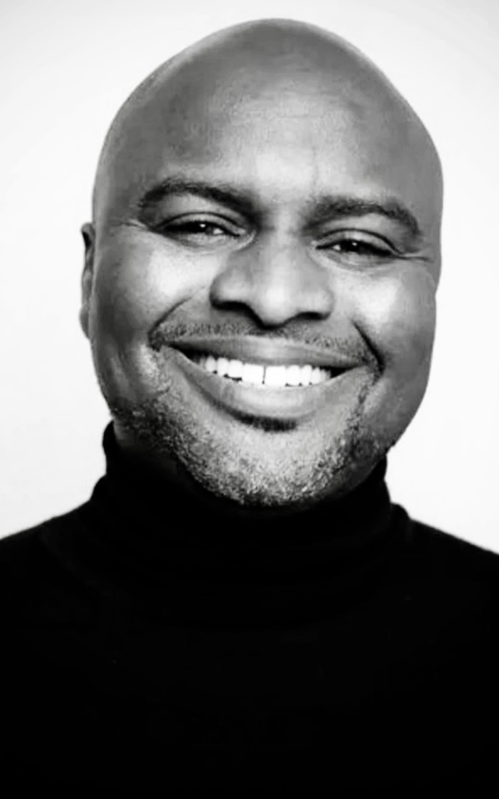
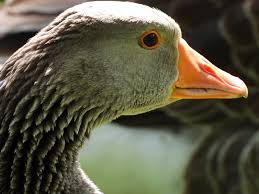

Frankie is an Essex based welfare and casting producer. With over 20 years' experience, Frankie has worked on some of the biggest shows in the industry including X-Factor, BGT, and First Dates. He understands intuitively who and what makes a great watch. He was also part of the 2022 "Breakthrough Leaders" cohort.

Cheryl is a Bradford based casting and talent producer. She has worked on several high-profile shows - X-Factor, BGT, 24 hours in A&E, and First Dates. Cheryl is a friendly, dedicated professional whose enthusiasm energises contestants. She isn't afraid to go that extra mile, thus ensuring she always delivers a happy and outstanding cast!
Alex is an experienced producer who has developed and made series for UK broadcasters, International Streamers and Digital Platforms. Dedicated to empowering people to tell their remarkable stories, she has worked across everything from Channel 4's The Undateables to Apple TV's Knife Edge. With an eye for a story, London-based Alex has 15 years industry experience and is always thinking of the next project for our clients.